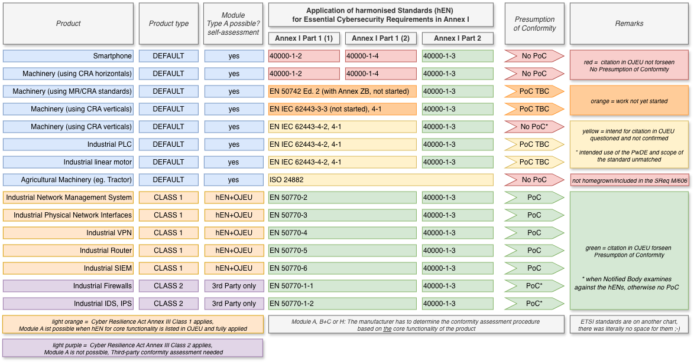

← Regulation timeline › Cybersecurity › CRA
Regulation (EU) 2024/2847 on horizontal cybersecurity requirements for products with digital elements
No future dates known.
| Date | Version | Official | Read (rendered) |
|---|---|---|---|
| 2024-11-20 | Official Journal | CELEX 32024R2847 | EN · DE (en.md de.md) |
| 2024-12-05 | Corrigendum 01 | CELEX 32024R2847R(01) | EN (en.md) |
| 2025-07-02 | Corrigendum 02 | CELEX 32024R2847R(02) | EN · DE (en.md de.md) |
| 2025-10-17 | Corrigendum 04 | CELEX 32024R2847R(04) | EN · DE (en.md de.md) |
| 2026-08-06 | Corrigendum 07 | CELEX 32024R2847R(07) | DE (de.md) |
| Act | Subject | Published | Read |
|---|---|---|---|
| Delegated Regulation (EU) 2025/1535 | Supplementing Regulation (EU) 2024/2847 of the European Parliament and of the Council with regard to an exclusion from the application of that Regulation for certain products with digital elements falling within the scope of Regulation (EU) No 168/2013 of the European Parliament and of the Council | 2025-10-29 | EN · DE (en.md de.md) |
| Implementing Regulation (EU) 2025/2392 | On the technical description of the categories of important and critical products with digital elements pursuant to Regulation (EU) 2024/2847 of the European Parliament and of the Council | 2025-12-01 | EN · DE (en.md de.md) |
| Delegated Regulation (EU) 2026/881 | Supplementing Regulation (EU) 2024/2847 of the European Parliament and of the Council by specifying the terms and conditions for applying the cybersecurity-related grounds in relation to delaying the dissemination of notifications | 2026-04-20 | EN · DE (en.md de.md) |
The Commission's Register of delegated acts lists none in preparation.
41standards requested 19projects in drafting 14projects in approval
| Deadline | Draft amendment | Requested standards |
|---|---|---|
| 2026-08-30 | 2026-11-30 | 2 (items 1, 15): designing, developing and producing products with digital elements in such a way that …; vulnerability handling for products with digital elements |
| 2026-10-30 | 2027-01-31 | 26 (26 items): identity management systems and privileged access management software and hardware, …; standalone and embedded browsers; password managers; software that searches for, removes, or quarantines malicious software; and 22 more |
| 2027-10-30 | – | 13 (13 items): making products with digital elements available on the market without known exploitable …; making products with digital elements available on the market with a secure by default …; ensuring that vulnerabilities in products with digital elements can be addressed through …; ensuring protection of products with digital elements from unauthorised access and …; and 9 more |
| 1 | European standard(s) on designing, developing and producing products with digital elements in such a way that they ensure an appropriate level of cybersecurity based on the risks | 2026-08-30 |
| 2 | European standard(s) on making products with digital elements available on the market without known exploitable vulnerabilities | 2027-10-30 |
| 3 | European standard(s) on making products with digital elements available on the market with a secure by default configuration | 2027-10-30 |
| 4 | European standard(s) on ensuring that vulnerabilities in products with digital elements can be addressed through security updates | 2027-10-30 |
| 5 | European standard(s) on ensuring protection of products with digital elements from unauthorised access and reporting on possible unauthorised access | 2027-10-30 |
| 6 | European standard(s) on protecting the confidentiality of data stored, transmitted or otherwise processed by a product with digital elements | 2027-10-30 |
| 7 | European standard(s) on protecting the integrity of data, commands, programs by a product with digital elements, and its configuration against any manipulation or modification not authorised by the user, as well as reporting on corruptions | 2027-10-30 |
| 8 | European standard(s) on processing only personal or other data that are adequate, relevant and limited to what is necessary in relation to the intended purpose of the product with digital elements (‘minimisation of data’) | 2027-10-30 |
| 9 | European standard(s) on protecting the availability of essential and basic functions of the product with digital elements | 2027-10-30 |
| 10 | European standard(s) on minimising the negative impact of a product with digital elements or its connected devices on the availability of services provided by other devices or networks | 2027-10-30 |
| 11 | European standard(s) on designing, developing and producing products with digital elements with limitted attack surfaces | 2027-10-30 |
| 12 | European standard(s) on designing, developing and producing products with digital elements that reduce the impact of an incident using appropriate exploitation mitigation mechanisms and techniques | 2027-10-30 |
| 13 | European standard(s) on providing security related information by recording and/or monitoring relevant internal activity of products with digital elements with an optout mechanism for the user | 2027-10-30 |
| 14 | European standard(s) on securely and easily removing or transferring all data and settings of a product with digital elements. | 2027-10-30 |
| 15 | European standard(s) on vulnerability handling for products with digital elements | 2026-08-30 |
| 16 | European standard(s) on essential cybersecurity requirements for identity management systems and privileged access management software and hardware, including authentication and access control readers, including biometric readers | 2026-10-30 |
| 17 | European standard(s) on essential cybersecurity requirements for standalone and embedded browsers | 2026-10-30 |
| 18 | European standard(s) on essential cybersecurity requirements for password managers | 2026-10-30 |
| 19 | European standard(s) on essential cybersecurity requirements for software that searches for, removes, or quarantines malicious software | 2026-10-30 |
| 20 | European standard(s) on essential cybersecurity requirements for products with digital elements with the function of virtual private network (VPN) | 2026-10-30 |
| 21 | European standard(s) on essential cybersecurity requirements for network management systems | 2026-10-30 |
| 22 | European standard(s) on essential cybersecurity requirements for Security information and event management (SIEM) systems | 2026-10-30 |
| 23 | European standard(s) on essential cybersecurity requirements for boot managers | 2026-10-30 |
| 24 | European standard(s) on essential cybersecurity requirements for public key infrastructure and digital certificate issuance software | 2026-10-30 |
| 25 | European standard(s) on essential cybersecurity requirements for physical and virtual network interfaces | 2026-10-30 |
| 26 | European standard(s) on essential cybersecurity requirements for operating systems | 2026-10-30 |
| 27 | European standard(s) on essential cybersecurity requirements for routers, modems intended for the connection to the internet, and switches | 2026-10-30 |
| 28 | European standard(s) on essential cybersecurity requirements for microprocessors with security-related functionalities | 2026-10-30 |
| 29 | European standard(s) on essential cybersecurity requirements for microcontrollers with security-related functionalities | 2026-10-30 |
| 30 | European standard(s) on essential cybersecurity requirements for application specific integrated circuits (AS IC) and field-programmable gate arrays (FPGA) with security-related functionalities | 2026-10-30 |
| 31 | European standard(s) on essential cybersecurity requirements for smart home general purpose virtual assistants | 2026-10-30 |
| 32 | European standard(s) on essential cybersecurity requirements for smart home products with security functionalities, including smart door locks, security cameras, baby monitoring systems and alarm systems | 2026-10-30 |
| 33 | European standard(s) on essential cybersecurity requirements for Internet connected toys covered by Directive 2009/48/EC that have social interactive features (e.g. speaking or filming) or that have location tracking features | 2026-10-30 |
| 34 | European standard(s) on essential cybersecurity requirements for personal wearable products to be worn or placed on a human body that have a health monitoring (such as tracking) purpose and to which Regulation (EU) 2017/745 or Regulation (EU) 2017/746 do not apply or personal wearable products that are intended for the use by and for children | 2026-10-30 |
| 35 | European standard(s) on essential cybersecurity requirements for hypervisors and container runtime systems that support virtualised execution of operating systems and similar environments | 2026-10-30 |
| 36 | European standard(s) on essential cybersecurity requirements for firewalls, intrusion detection and/or prevention systems, including specifically those intended for industrial use | 2026-10-30 |
| 37 | European standard(s) on essential cybersecurity requirements for tamperresistant microprocessors | 2026-10-30 |
| 38 | European standard(s) on essential cybersecurity requirements for tamperresistant microcontrollers | 2026-10-30 |
| 39 | European standard(s) on essential cybersecurity requirements for Hardware Devices with Security Boxes | 2026-10-30 |
| 40 | European standard(s) on essential cybersecurity requirements for smart meter gateways within smart metering systems as defined in Article 2 (23) of Directive (EU) 2019/944 and other devices for advanced security purposes, including for secure cryptoprocessing | 2026-10-30 |
| 41 | European standard(s) on essential cybersecurity requirements for smartcards or similar devices, including secure elements | 2026-10-30 |
Pathways for manufacturers of machinery and industrial automation products: which harmonised standards they can apply for the essential cybersecurity requirements of Annex I CRA, and whether these are expected to give presumption of conformity (Art. 27(1) CRA). The procedure follows the core functionality of the product (Art. 7(1) CRA): class I products may use self-assessment (Module A) only with harmonised standards, common specifications or a certification scheme at level "substantial" fully applied (Art. 32(2)); class II products need a notified body (Module B+C or H) or certification (Art. 32(3)).

| Product | Product type | Module A possible? | Annex I Part I | Annex I Part II | Presumption of conformity | |
|---|---|---|---|---|---|---|
| Smartphone | default | yes | EN 40000-1-2 (red), EN 40000-1-4 (red) | EN 40000-1-3 (green) | no | |
| Machinery (CRA horizontals) | default | yes | EN 40000-1-2 (red), EN 40000-1-4 (red) | EN 40000-1-3 (green) | no | |
| Machinery (MR/CRA standards) | default | yes | EN 50742 Ed. 2 with Annex ZB, not started (orange) | EN 40000-1-3 (green) | to be confirmed | |
| Machinery (CRA verticals) | default | yes | EN IEC 62443-3-3 (not started), EN IEC 62443-4-1 (orange) | EN 40000-1-3 (green) | to be confirmed | |
| Machinery (CRA verticals) | default | yes | EN IEC 62443-4-2, EN IEC 62443-4-1 (yellow) | EN 40000-1-3 (green) | no * | |
| Industrial PLC | default | yes | EN IEC 62443-4-2, EN IEC 62443-4-1 (yellow) | EN 40000-1-3 (green) | to be confirmed | |
| Industrial linear motor | default | yes | EN IEC 62443-4-2, EN IEC 62443-4-1 (yellow) | EN 40000-1-3 (green) | to be confirmed | |
| Agricultural machinery (e.g. tractor) | default | yes | ISO 24882, Part I and II (yellow) | no (not in M/606) | ||
| Industrial network management system | class I | with cited harmonised standard | EN 50770-2 (green) | EN 40000-1-3 (green) | yes | |
| Industrial physical network interfaces | class I | with cited harmonised standard | EN 50770-3 (green) | EN 40000-1-3 (green) | yes | |
| Industrial VPN | class I | with cited harmonised standard | EN 50770-4 (green) | EN 40000-1-3 (green) | yes | |
| Industrial router | class I | with cited harmonised standard | EN 50770-5 (green) | EN 40000-1-3 (green) | yes | |
| Industrial SIEM | class I | with cited harmonised standard | EN 50770-6 (green) | EN 40000-1-3 (green) | yes | |
| Industrial firewalls | class II | no (third party) | EN 50770-1-1 (green) | EN 40000-1-3 (green) | yes, with notified body | |
| Industrial IDS | IPS | class II | no (third party) | EN 50770-1-2 (green) | EN 40000-1-3 (green) | yes, with notified body |
| Project | Title | Status | Next |
|---|---|---|---|
| prEN 40000-1-3 CEN/CLC/JTC 13 | Cybersecurity requirements for products with digital elements - Part 1-3: Vulnerability handling | Under Approval 2026-03-05 | formal vote forecast 2025-06-06 |
| EN 304 625 CYBER EUSR | Cybersecurity requirements for physical and virtual network interfaces | Approval Stage – Deliverable approval procedure initiated 2026-08-10 | 7 VR – EC assessment before EV received (2026-09-10) |
| EN 304 617 CYBER EUSR | Cybersecurity requirements for browsers | Approval Stage – Deliverable approval procedure initiated 2026-08-13 | 7 VR – EC assessment before EV received (2026-09-13) |
| EN 304 620 CYBER EUSR | Cybersecurity requirements for Virtual Private Networks (VPNs) | Approval Stage – Deliverable approval procedure initiated 2026-08-13 | 7 VR – EC assessment before EV received (2026-09-13) |
| EN 304 621 CYBER EUSR | Cybersecurity requirements for Network Management systems | Approval Stage – Deliverable approval procedure initiated 2026-08-13 | 7 VR – EC assessment before EV received (2026-09-13) |
| EN 304 622 CYBER EUSR | Cybersecurity requirements for Security information and event management (SIEM) systems | Approval Stage – Deliverable approval procedure initiated 2026-08-13 | 7 VR – EC assessment before EV received (2026-09-13) |
| EN 304 626 CYBER EUSR | Cybersecurity requirements for operating systems | Approval Stage – Deliverable approval procedure initiated 2026-08-13 | 7 VR – EC assessment before EV received (2026-09-13) |
| FprEN 40000-1-1 CEN/CLC/JTC 13 | Cybersecurity requirements for products with digital elements - Part 1-1: Vocabulary | Under Approval 2026-08-06 | formal vote forecast 2026-07-28 |
| FprEN 40000-1-2 CEN/CLC/JTC 13 | Cybersecurity requirements for products with digital elements - Part 1-2: Principles, product risk management, and lifecycle activities | Under Approval 2026-08-06 | formal vote forecast 2026-07-28 |
| EN 304 618 CYBER EUSR | Cybersecurity requirements for password managers | Approval Stage – Comments categorisation assessed 2026-09-22 | Final deliverable endorsed for registrat (2026-11-23) |
| EN 304 623 CYBER EUSR | Cybersecurity requirements for boot managers | Approval Stage – Comments categorisation assessed 2026-09-16 | Final deliverable endorsed for registrat (2026-12-05) |
| EN 304 635 CYBER EUSR | Cybersecurity requirements for Virtualisation Execution Stack (VES) and Container Execution Stack (CES), including hypervisors and container runtime systems | Approval Stage – Comments categorisation assessed 2026-09-17 | Final deliverable endorsed for registrat (2026-12-11) |
| EN IEC 62443-4-2:2019/prAA:2026 CLC/TC 65X | Security for industrial automation and control systems - Part 4-2: Technical security requirements for ACS components | Under Approval 2026-06-05 | formal vote forecast 2027-02-08 |
| EN IEC 62443-4-1:2018/prAA:2026 CLC/TC 65X | Security for industrial automation and control systems - Part 4-1: Secure product development lifecycle requirements | Under Approval 2026-06-05 | formal vote forecast 2027-02-23 |
| EN IEC 62443-3-3:2019/prAA CLC/TC 65X | Industrial communication networks - Network and system security - Part 3-3: System security requirements and security levels | Under Drafting 2024-06-27 | formal vote forecast 2027-02-08 |
| prCEN/CLC/TR XXX CEN/CLC/JTC 13 | Proof-of-concept for the application of EN 18037 in support of the CRA | Under Drafting 2025-08-28 | next stage (2025-11-15) |
| prEN XXX CEN/CLC/JTC 13 | Cybersecurity requirements for products with digital elements – Smart Meter Gateway | Under Drafting 2026-03-09 | formal vote forecast 2027-01-19 |
| prEN 50770-1 CLC/TC 65X | Security for Operational Technologies - Part 1: Security Profile for firewalls and intrusion detection and prevention systems (based on EN IEC 62443) | Under Drafting 2025-10-21 | formal vote forecast 2027-08-03 |
| prEN 50770-4 CLC/TC 65X | (prEN 50770-4) Security for Operational Technologies - Part 4: Security Profile for products with digital elements with the function of virtual private network (VPN) | Under Drafting 2025-10-21 | formal vote forecast 2027-08-03 |
| prEN 50770-5 CLC/TC 65X | Security for Operational Technologies - Part 5: Security Profile for routers, modems intended for the connection to the internet, and switches (based on EN IEC 62443) | Under Drafting 2025-10-21 | formal vote forecast 2027-08-03 |
| prEN 50770-6 CLC/TC 65X | Security for Operational Technologies - Part 6: Security Profile for security information and event management (SIEM) systems (based on EN IEC 62443) | Under Drafting 2025-10-21 | formal vote forecast 2027-08-03 |
| prEN 50770-2 CLC/TC 65X | (prEN 50770-2) Security for Operational Technologies - Part 2: Security Profile for network management systems (based on EN IEC 62443) | Under Drafting 2025-12-27 | formal vote forecast 2027-08-03 |
| prEN 50770-3 CLC/TC 65X | (prEN 50770-3) Security for Operational Technologies - Part 3: Security Profile for physical and virtual network interfaces (based on EN IEC 62443) | Under Drafting 2025-12-27 | formal vote forecast 2027-08-03 |
| EN 304 624 CYBER EUSR | Cybersecurity requirements for Public key infrastructure and digital certificate issuance software | Drafting Stage – 7 V – EC assessment before EV requested 2026-08-10 | 7 VR – EC assessment before EV received (2026-09-10) |
| EN 304 627 CYBER EUSR | Cybersecurity requirements for routers, modems intended for the connection to the internet, and switches | Drafting Stage – 7 VR – EC assessment before EV received 2026-08-19 | Resolution of EC comments (2026-09-30) |
| EN 304 636 CYBER EUSR | Cybersecurity requirements for firewalls, intrusion detection and/or prevention systems | Drafting Stage – 7 VR – EC assessment before EV received 2026-08-19 | Resolution of EC comments (2026-09-30) |
| EN 304 631 CYBER EUSR | Cybersecurity requirements for smart home general purpose virtual assistants | Drafting Stage – 7 VR – EC assessment before EV received 2026-09-17 | Resolution of EC comments (2026-10-11) |
| EN 304 632 CYBER EUSR | Cybersecurity requirements for smart home products with security functionalities; including smart door locks, security cameras, baby monitoring systems and alarm systems CRA Smart home security products Topic # 32 full | Drafting Stage – 7 VR – EC assessment before EV received 2026-09-11 | Resolution of EC comments (2026-10-11) |
| EN 304 633 CYBER EUSR | Cybersecurity requirements for Internet connected toys covered by Directive 2009/48/EC that have social interactive features (e.g. speaking or filming) or that have location tracking features CRA Internet connected toys Topic # 33 full scope | Drafting Stage – 7 VR – EC assessment before EV received 2026-09-11 | Resolution of EC comments (2026-10-11) |
| EN 304 619 CYBER EUSR | Cybersecurity requirements for software that searches for, removes, or quarantines malicious software | Drafting Stage – Stable draft 2026-09-18 | Resolution of EC comments (2026-10-12) |
| EN 304 634 CYBER EUSR | Cybersecurity requirements for personal wearable | Drafting Stage – 7 VR – EC assessment before EV received 2026-09-23 | Resolution of EC comments (2026-10-15) |
| EN 304 642 CYBER EUSR | Cybersecurity Requirements for Network Functions of Telecommunications Systems | Drafting Stage – Early draft 2026-07-31 | Mature draft (2026-10-31) |
| prCEN/CLC/TS XXX CEN/CLC/JTC 13 | Guidance for the application of EN 18037 in support of the CRA | Under Drafting 2025-08-28 | – |
| prEN XXX CEN/CLC/JTC 13 | Cybersecurity requirements for products with digital elements - Generic security requirements | Under Drafting 2025-03-05 | formal vote forecast 2026-09-20 |
Comitology committee C130100, CNECT; examination procedure (Art. 5, 6 and 7 of Regulation (EU) No 182/2011)
Expert group E03967, CNECT
Procedure 2022/0272(COD): proposal, Parliament and Council positions, trilogues and adoption, drawn as the ordinary legislative procedure (Art. 294 TFEU) and over time, with every document.